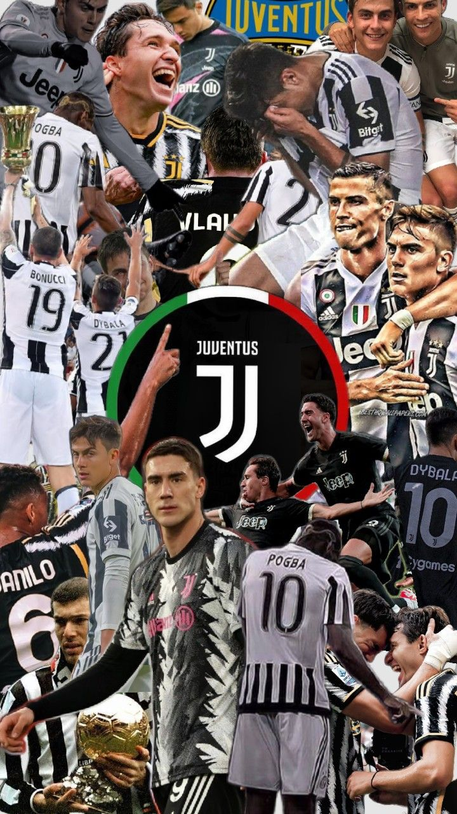
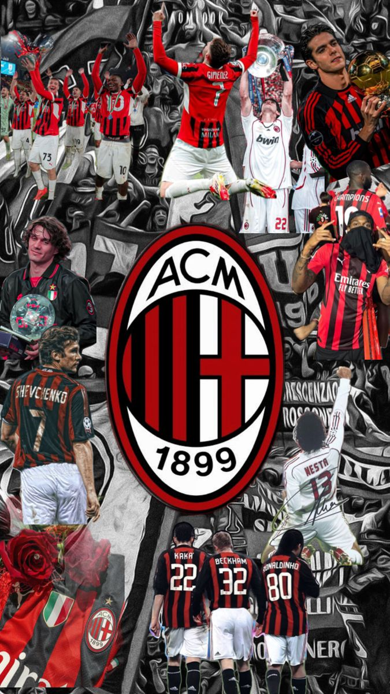

A Bajnokok Ligája (UEFA Champions League)
A Bajnokok Ligája a legrangosabb európai klubfutball-torna, amelyet az UEFA (Európai Labdarúgó-szövetség) szervez évente. A világ legjobb klubcsapatai itt mérkőznek meg egymással a kontinens bajnoka címért.
- 🏆 Története
- A sorozat 1955-ben indult „BEK” (Bajnokcsapatok Európa Kupája) néven.
- 1992-ben kapta meg jelenlegi nevét: UEFA Champions League.
- Azóta nem csak bajnokcsapatok, hanem a legerősebb ligák több helyezettje is részt vehet.
- ⚽ Lebonyolítás
- Selejtezők: Kisebb bajnokságok csapatai itt küzdenek meg a főtáblára jutásért.
- Csoportkör: 32 csapat 8 csoportban játszik (ősztől tél végéig).
- Kieséses szakasz: A legjobb 16 csapat továbbjut, és egyenes kieséses rendszerben mérkőznek meg.
- Döntő: A két legjobb csapat játszik a trófeáért – semleges helyszínen.
- 🥇 Rekordok
- Legtöbb győzelem: Real Madrid (15 alkalommal)
- Legtöbb gól: Cristiano Ronaldo (legjobb góllövő a sorozat történetében)
- Legtöbbször döntőben: Real Madrid, AC Milan, Bayern München, Liverpool
- 🌍 Miért különleges?
- A világ legnézettebb klubfutball-eseménye.
- Olyan sztárok játszanak itt, mint Messi, Haaland, Mbappé, és korábban Zidane vagy Ronaldinho.
- A BL-himnusz és a döntő estéje szinte ünnep a focirajongók számára.
Látogasd meg a hivatalos UEFA oldalt további információkért!
BL Rekorderek
| Csapat | Győzelmek száma | Döntők száma |
|---|---|---|
| Real Madrid | 15 | 18 |
| AC Milan | 7 | 11 |
| Bayern München | 6 | 11 |
| Liverpool | 6 | 10 |
| Juventus | 2 | 9 |